DB2的锁
DB2的锁实现机制很复杂，它没有实现类似Oracle的undo机制，导致操作之间容易阻塞， 比如你经常会听到有人说DB2查询阻塞更新，更新不同记录导致阻塞等！这其中到底是 如何导致的？是否有迹可循？Oracle的应用迁移到DB2是否就是简单的SQL兼容测试？同 样的应用逻辑为何在DB2上会发生死锁？如何能够提高DB2的并发能力？针对这些问题， 本文尝试做一些解读。
锁列表1
首先我们先来看看DB2的锁列表，下表里面列出了DB2使用到的所有锁。表中的Lock Mode 一列是锁的名称；第二列Applicable Object Type表示锁适用的对象范围，例如IN不是 一个Row锁；第三列Description是对锁的一个简单描述。
首先我们来看锁名称，DB2将锁分为Intent Locks和Non-intent Locks，也就是人们通常 所说的意向锁和非意向锁，锁名称中带“I”子母的都是意向锁，剩下的都是非意向锁， 意向锁是粗粒度锁，不能锁行。从字面意思理解，表示有意向做什么操作，举个例子： 我有一条Update语句希望对A表做Update操作，那么DB2会首先对A表加IX（意象排他）锁 ，然后结合行级X锁实现（具体会更复杂，后面我们会讲到）。除了IN锁之外，其他的意 向锁（IS，IX，SIX）都需要结合行级锁实现具体操作。IN锁是一个特例，基本可以理解 为不锁（只是排他Z锁，后续的兼容列表可以看到，UR隔离级别使用）。
非意向锁中，NS、S、U为读请求锁，其中：NS是行级别锁，只使用在RS和CS隔离级别，RR 隔离级别直接加S锁；select for update语句对行加U锁，表级U锁使用于比如LOAD、REORG 。X、Z、NW为写请求锁，Z锁基本都是DDL操作，X锁也是排他的，只有UR隔离级别允许读， NW锁应该不常发生，只有在RR隔离级别做索引扫描的时候，同时对扫描的索引插入一个Key ，这时插入操作无法完成，需要等待事物完成，这时候，插入操作会在插入Key的下一个 Key加NW锁。
锁适用的对象范围表示锁能加在哪些对象上。对于锁的描述我也不重复了。
| Lock Mode | Applicable Object Type | Description |
|---|---|---|
| IN(Intent None) | Table spaces, blocks, | The lock owner can read any data in the |
| tables, data partitions | object, including uncommitted data, but | |
| cannot update any of it. Other concurrent | ||
| applications can read or update the table. | ||
| IS (Intent Share) | Table spaces, blocks, | The lock owner can read data in the locked |
| tables, data partitions | table. but cannot update this data. Other | |
| applications can read or update the table. | ||
| IX (Intent Exclusive) | Table spaces, blocks, | The lock owner and concurrent applications |
| tables, data partitions | can read and update data. Other concurrent | |
| applications can both read and update the | ||
| table. | ||
| NS (Scan Share) | Rows | The lock owner and all concurrent applica- |
| -tions can read, but not update, the locked | ||
| row. This lock is acquired on rows of a ta- | ||
| -ble, instead of an S lock, where the isol- | ||
| -ation level of the application is either RS | ||
| or CS. | ||
| NW (Next Key Weak | Rows | When a row is inserted into an index, an NW |
| Exclusive) | lock is acquired on the next row. This occurs | |
| only if the next row is currently locked by an | ||
| RR scan. The lock owner can read but not update | ||
| the locked row. This lock mode is similar to an | ||
| X lock, except that it is also compatible with | ||
| NS locks. | ||
| S (Share) | Rows, blocks, tables, | The lock owner and all concurrent applications |
| data partitions | can read, but not update, the locked data. | |
| SIX (Share with intent | Tables, blocks, data | The lock owner can read and update data. Other |
| Exclusive) | partitions | concurrent applications can read the table. |
| U (Update) | Rows, blocks, tables, | The lock owner can update data. Other units of |
| data partitions | work can read the data in the locked object, | |
| but cannot update it. | ||
| X (Exclusive) | Rows, blocks, tables, | The lock owner can both read and update data in |
| buffer pools, data | the locked object. Only uncommitted read (UR) | |
| partitions | applications can access the locked object. | |
| Z (Supper Exclusive) | Tables spaces, tables, | This lock is acquired on a table under certain |
| data partitions, blocks | conditions, such as when the table is altered | |
| or dropped, an index on the table is created or | ||
| dropped, or for some types of table reorganiza- | ||
| -tion. No other concurrent application can read | ||
| or update the table. |
锁兼容表2
当A请求获取了某个对象的锁，B请求同时需要对该对象申请加锁的时候，如果两个锁不 兼容，B请求需要等待，直到A请求释放该锁。
下表列出了锁之间的兼容关系，横轴表示对象上已有的锁，纵轴表示申请在该对象上加锁
| None | IN | IS | NS | S | IX | SIX | U | X | Z | NW | |
|---|---|---|---|---|---|---|---|---|---|---|---|
| None | Y | Y | Y | Y | Y | Y | Y | Y | Y | Y | Y |
| IN | Y | Y | Y | Y | Y | Y | Y | Y | Y | N | Y |
| IS | Y | Y | Y | Y | Y | Y | Y | Y | N | N | N |
| NS | Y | Y | Y | Y | Y | N | N | Y | N | N | Y |
| S | Y | Y | Y | Y | Y | N | N | Y | N | N | N |
| IX | Y | Y | Y | N | N | Y | N | N | N | N | N |
| SIX | Y | Y | Y | N | N | N | N | N | N | N | N |
| U | Y | Y | Y | Y | Y | N | N | N | N | N | N |
| X | Y | Y | N | N | N | N | N | N | N | N | N |
| Z | Y | N | N | N | N | N | N | N | N | N | N |
| NW | Y | Y | N | Y | N | N | N | N | N | N | N |
执行计划、锁和隔离级别之间的关系3
对于DB2开发人员来说，掌握执行计划、锁和隔离级别之间的关系，可以很好的避免应用程 序deadlock/timeout wait(SQLCODE -911 reason 2 和SQLCODE -911 reason 68)，增加应 用程序并发能力。
首先DB2的隔离级别分为RR、RS、CS、UR四种，具体的区别这里不做详细描述，有兴趣的人 可以自己搜索相关资料了解。
对于同样一条SQL语句，隔离级别和SQL执行计划都能影响到锁的使用，下面列出了相互之 间的关系表。
下面列表中斜杠前面的是表锁，斜杠后面的是行锁，'-'表示不加锁。
在说明的时候，会用到TEST表，表数据如下：
db2inst1@tacy:~$ db2 'select * from test'
A B
----------- -----------
1 1
2 2
3 3
4 4
5 5
6 6
7 7
8 8
9 9
9 record(s) selected.
Lock Modes for Table Scans with No Predicates
DB2使用扫描表的方式执行SQL，同时SQL没有谓词，例如：
select * from test 或者 update test set a=1
锁的使用情况如下表：

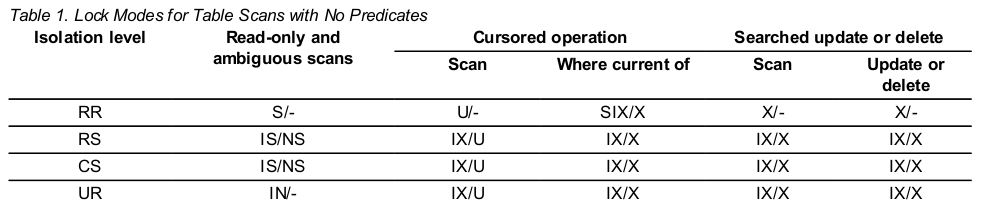
如果是只读的操作，比如Select，RR隔离级别时，直接对表加S锁；RS/CS是先对表加IS锁 ，然后对行加NS锁。UR隔离级别只对表加IN锁，兼容除Z以外的所有锁，并发性很高，但是 要慎用，有脏读问题。
如果是修改操作，比如Update，需要指出的是，数据库在执行Update操作的时候，会分为 Scan和Update两部分：先是找到需要更新的行，然后对行做更新操作。Scan阶段，DB2会对 所有需要扫描的数据行加锁，如果发现不是目标，则释放该行上的锁，换句话说，DB2会对 所有需要扫描的数据加锁，不管是不是目标，理解这一点非常重要。Update阶段则保持目 标行上的锁，或者升级锁（如果Scan阶段在目标行上锁级别不够，这种情况后续可以看到） 。由于没有谓词，是对全表操作，RR隔离级别直接对表加X锁，RS/CS/UR先对表加IX锁，然 后对行加X锁，两阶段锁一致。
如果是Cursored操作，你在写存储过程的时候经常会用，Where current of是个写操作， 例如下面语句：
update test set a=1 where current of cursor_name
效果类似select for update操作，他们两者加锁的情况一致。
针对上表的情况，建议你在事务中尽量不要对表做没有谓词的查询，如果你做了类似的操 作，DB2会对表中的每条记录加NS/S锁，那么其他对该表的修改请求全部阻塞，因为X锁和 NS/S锁不兼容，除非你使用UR隔离级别（IN兼容X）。
Lock Modes for Table Scans with Predicates
DB2使用表扫描方式执行SQL，带谓词，条件字段无索引，例如:
select * from test where a=1 或者 update test set b=4 where a=1
针对test表的操作，a字段上无索引。

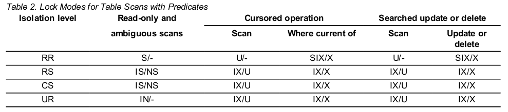
对比和表一的区别，针对更新操作，锁的模式有所变化，扫描阶段不再直接在被扫描行上 加X锁了，而是加U锁，U锁相对于X锁有更好的并发性，例如下面场景在RS/CS隔离级别是可 以并行的（UR当然更没问题，但是RR不行）： 事务一先执行操作：
select * from test where a=1
事物二后执行操作：
update test set b=10 where a=3
由于NS锁兼容U锁，当事物一在test表中”a=1“的行上加NS锁之后，允许事物二的Update语 句对事物一锁定的行加U锁，当他发现这些行不是它需要更新的行时，就不会升级成X锁，这 样他们相安无事。
但是你思考一下，反过来这里可就不行了。如果是事物二先执行，事物一后执行，情况就 不妙了。由于没有索引条件，两条语句必须扫描表，如果Update先执行，会对符合条件的 行加X锁，Select后续扫描这些行的时候，虽然不是它的目标行，但是它需要先尝试加NS 锁，X锁和NS锁不兼容，只能等待。
下面一种情况你留待你思考一下，我就不重复了（无法并发）： 事物一执行：
update test set b=11 where a=1
事物二执行：
update test set b=12 where a=2
Lock Modes for RID Index Scans with No Predicates
DB2使用索引扫描方式执行SQL，不带谓词，例如：
select a from test 或者 update test set a=1
这里，我们的test表上，对a字段有索引。
 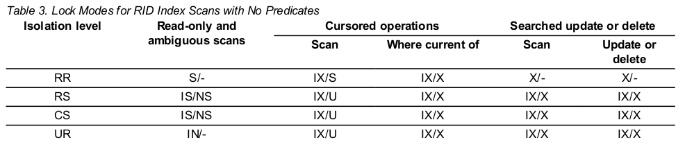
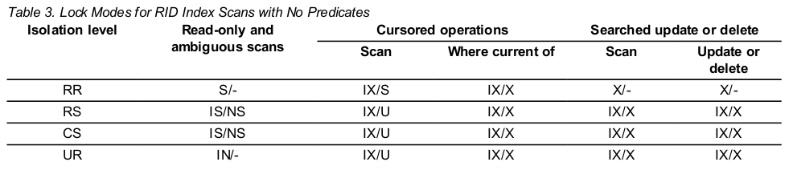
和前两者的区别在于，这里不再是扫表了，而是扫描索引，但是由于没有任何条件，都是 全表操作，并发能力和表一类似。
Lock Modes for RID Index Scans with a Single Qualifying Row
DB2使用索引扫描方式执行SQL，带谓词，例如：
select a from test where a=2 或者 update test set b=1 where a=4
这里，我们的test表上，对a字段有索引。
 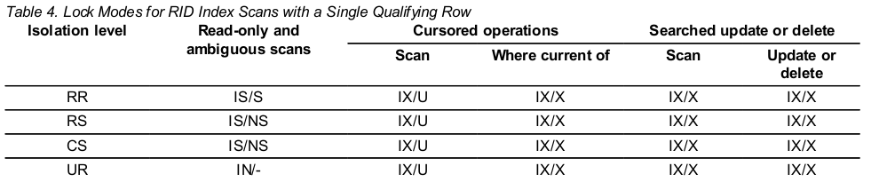
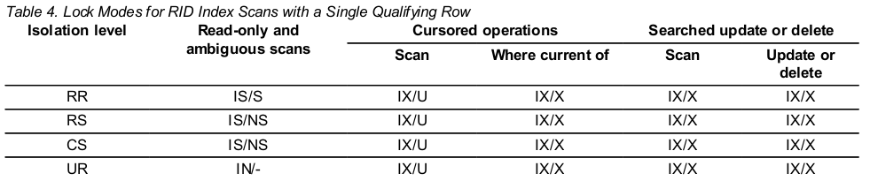
这种情况下，表二中的情况都能并行，但是别太乐观，如果我们往表里面增加一条记录：
insert into test values(6,0)
这个时候你再尝试先在事务一执行：
update test set b=11 where a=5 with rs
然后在事务二执行：
update test set b=11 where a=9 and a=3 with rs
不幸的是，事务二被阻塞了，你可以通过db2top获取事务二SQL的执行计划就知道原因，该 update没有走索引，而是使用了全表扫描。
Lock Modes for RID Index Scans with Start and Stop Predicates Only
DB2使用索引扫描方式执行SQL，带谓词，类似语句：
select * from test where a>1 and a<5
基本情况都和上面类似，就不详述了，关键点就是执行计划会影响锁的使用。


Lock Modes for RID Index Scans with Index and Other Predicates (sargs, resids) Only
 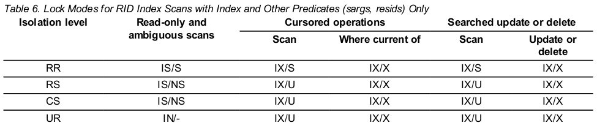
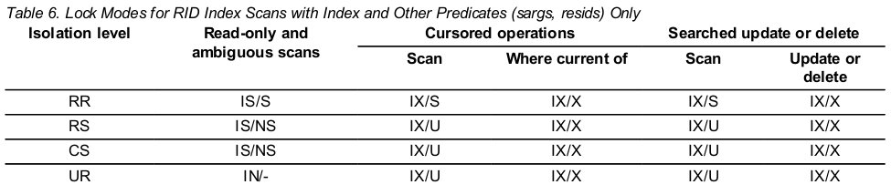
Lock Modes for Index Scans Used for Deferred Data Page Access: RID Index Scan with No Predicates
后续的表主要理解Deferred Data Page Access这个概念，说的应该是多索引情况，感觉和 前面的情况没有明显区别，可能情况更复杂点，比如先扫描A索引，获取ROW的bitmap和后 续索引的bitmap做逻辑运算，获取最后结果，有可能更复杂，有待深入了解。


Lock Modes for Index Scans Used for Deferred Data Page Access: After a RID Index Scan with No Predicates
 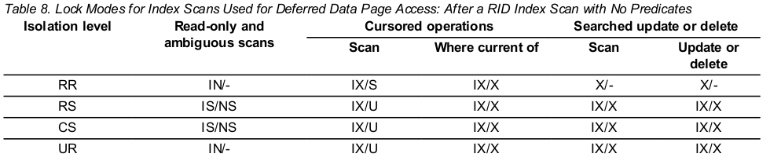
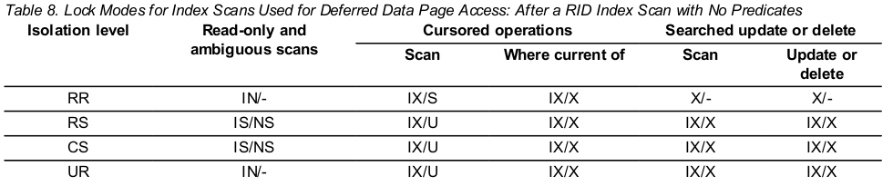
Lock Modes for Index Scans Used for Deferred Data Page Access: RID Index Scan with Predicates (sargs, resids)
 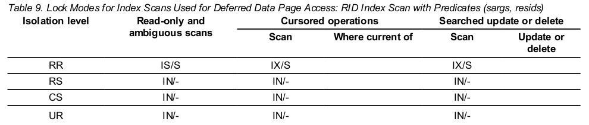
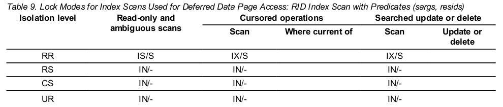
Lock Modes for Index Scans Used for Deferred Data Page Access: After a RID Index Scan with Predicates (sargs, resids)


Lock Modes for Index Scans Used for Deferred Data Page Access: RID Index Scan with Start and Stop Predicates Only


Lock Modes for Index Scans Used for Deferred Data Page Access: After a RID Index Scan with Start and Stop Predicates Only
 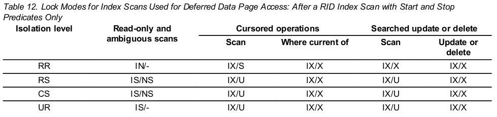
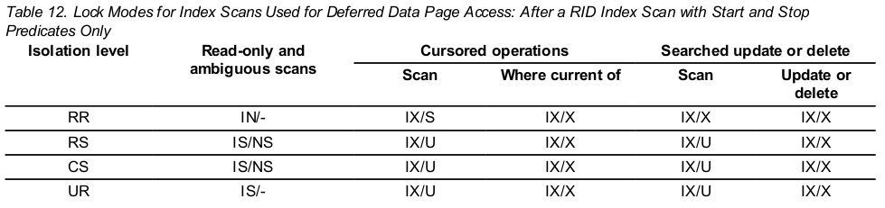
研究锁的一些方法
如果有兴趣，可以通过自己构造更复杂的情况来验证锁的情况，验证方法很简单，打开两 个DB2连接，运行sql的时候带上‘+c’选项即可，同时SQL语句申明隔离级别，比如我想 验证RS隔离级别下两个SQL的并发情况，只需要写类似如下的SQL：
db2 +c 'select * from test where a=1 with rs'
该SQL表明不自动提交，同时使用RS隔离级别。
观察锁的情况，通过db2pd即可，比如我要观察阻塞的锁：
db2inst1@tacy:~$ db2pd -d tacy -wlocks Database Partition 0 -- Database TACY -- Active -- Up 0 days 02:21:36 -- Date 04/03/2014 22:16:53 Locks being waited on : AppHandl [nod-index] TranHdl Lockname Type Mode Conv Sts CoorEDU AppName AuthID AppID 552 [000-00552] 12 02000400080000000000000052 Row ..X G 78 db2bp DB2INST1 *LOCAL.db2inst1.140403115529 541 [000-00541] 2 02000400080000000000000052 Row ..U W 20 db2bp DB2INST1 *LOCAL.db2inst1.140403115517
简单解读一下，Lockname一致，表明他们希望是同样对象的锁，TranHdl表明事务ID，事务 12持有Row上的X锁（Sts状态为G，表明获得锁），事务2等待（Sts状态未W，表明等待锁） 。更详细信息可以通过下面命令：
db2inst1@tacy:~$ db2pd -db tacy -locks showlock wait Database Partition 0 -- Database TACY -- Active -- Up 0 days 02:31:33 -- Date 04/03/2014 22:26:50 Locks: Address TranHdl Lockname Type Mode Sts Owner Dur HoldCount Att ReleaseFlg rrIID 0x00007F0B562B1780 2 02000400080000000000000052 Row ..U W 12 1 0 0x00000000 0x40000000 0 TbspaceID 2 TableID 4 PartitionID 0 Page 0 Slot 8 0x00007F0B562B5A00 12 02000400080000000000000052 Row ..X G 12 1 0 0x00000000 0x40000000 0 TbspaceID 2 TableID 4 PartitionID 0 Page 0 Slot 8
他们锁在了表空间ID为2上的一个表上的一行，该表的ID是4，行的位置在Page 0的Slot 8 上。从锁的情况看，可能是一个Update语句阻塞了另一个Update语句，后一个Update语句 走了全表扫描。
如果你想看看具体该SQL语句的执行计划，你可以通过db2top工具，使用方法是：
db2top -d tacy
首先进入Dyanmic sql视图；按‘/’键，输入‘test’，会列出所有包含‘test’关键字的SQL； 键入‘L’键，输入对应SQL的‘SQL_Statement HashValue‘，会显示该SQL全文；键入‘e’键 ，能够得到该SQL的执行计划。如果想更详细了解db2top，请参考官方文档。
更进一步，如果你想了解他们锁的对象以及锁在哪一行上，前者比较简单，通过下面SQL语 句即可：
select tabname,tbspace from syscat.tables where tableid=? and tbspaceid=?
后者需要通过db2dart工具来实现，不过db2dart一般无法在生产环境使用，因为他要求数 据库上不能有任何连接。如果你想知道上面的SQL到底阻塞在哪一行，可以使用下面命令：
db2dart tacy /dd /oi 4 /tsi 2 /ps 0 /np 1 /v y
工具会生成一个RPT文件，直接文本编辑器打开，找到‘Slot 8‘条目即可。
如果你不熟悉db2的系统表，用下面命令做个简单了解：
db2 list tables for all db2 describe table syscat.tables
结尾
到这里结束本文，希望能对你了解DB2有一点帮助，当然了解的最好方法还是自己动手实验 ，DB2提供免费的C-Express版本，在Ubuntu上直接安装db2exc包即可，非常方便，做测试 这个版本就够了。最后需要强调一点，不清楚的地方找DB2的InformationCenter。